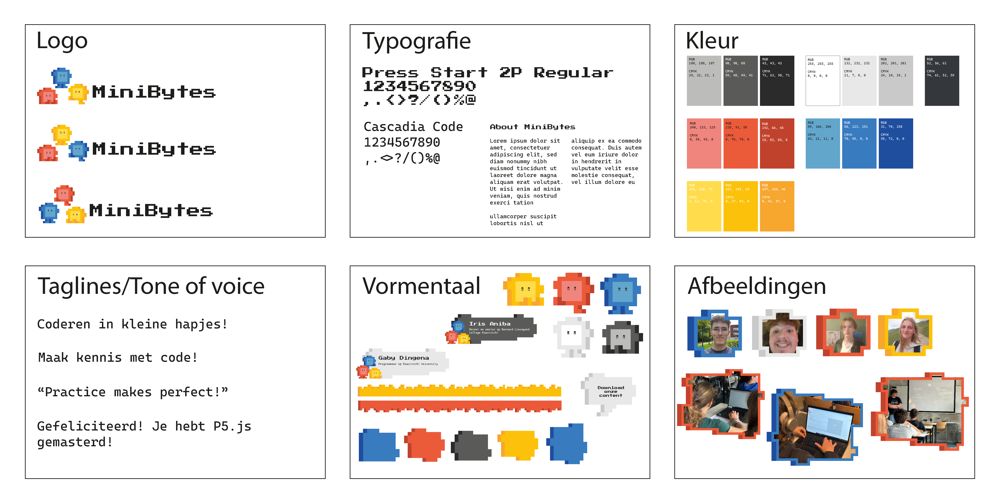
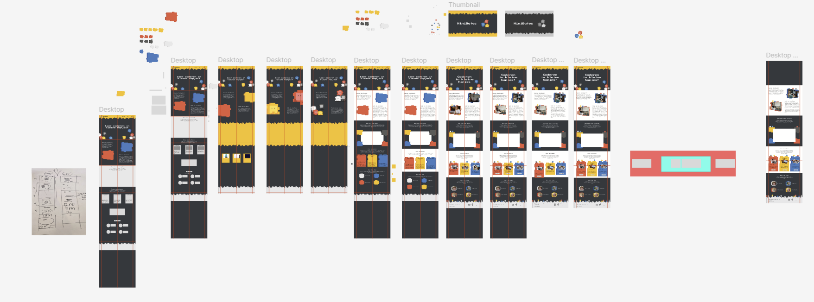

Om de workshop optimaal te laten aansluiten bij de belevingswereld van de doelgroep, is gekozen voor een speelse visuele identiteit. Door het gebruik van een levendig kleurenpalet, unieke mascottes en een dynamische vormentaal, wordt een directe link gelegd met de creatieve wereld van het coderen.
Ik nam de regie over het gehele web-traject: van het vertalen van de eerste ideeën naar wireframes en visueel ontwerp, tot het coderen van een volledig functionele website. Hiermee heb ik zowel mijn ontwerp- als development-skills gecombineerd tot één eindproduct.

View website
